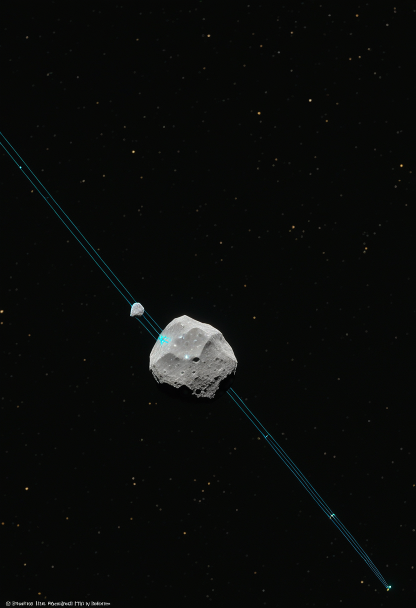
木曜日の便り。2026年7月4日、中国の天問2号が地球の準衛星カモオアレワへ20km圏内接近を開始し、翌7月5日にはJAXAのはやぶさ2が小惑星トリフネ（98943）へ最接近距離わずか1kmの超高速フライバイを実施する。人類が48時間以内に2つの小惑星へ同時に手を伸ばすという、探査史上まれな週末が到来した。SMA領域では低中所得国向けAAV遺伝子治療の実世界データが蓄積され、BCIでは皮質表面型Precision Neuroscienceが商業化軌道に入った。脳のデジタルツインは耳鳴りの刺激標的を特定し、認知医学の新しい言語を手に入れつつある。
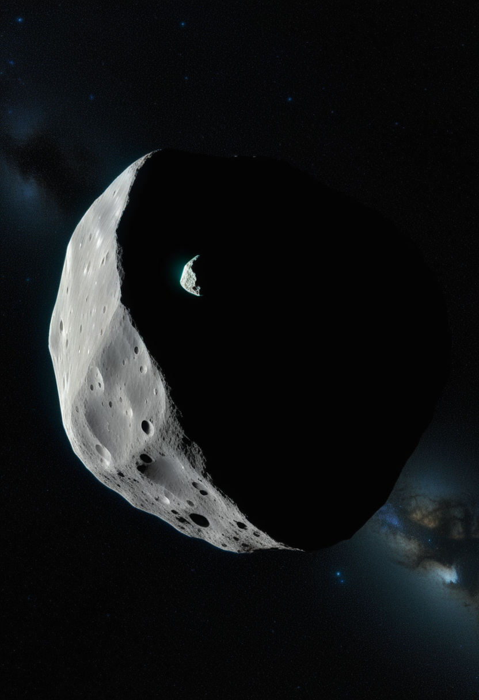
2026年7月5日18時30分頃（日本時間）、JAXAの小惑星探査機はやぶさ2（拡張ミッション中）が小惑星トリフネ（98943）へ最接近距離約1km・相対速度約5km/sの超高速フライバイを実施する。直径約450mで細長い形状が推定されるS型小惑星を、2020年のリュウグウサンプルリターン後の拡張ミッション機が通過する計画で、高精度軌道制御技術の実証と将来の惑星防衛（インパクト回避）技術への応用を兼ねる。前日7月4日には中国の天問2号が地球の準衛星カモオアレワ（Kamoʻoalewa）へ20km圏内接近を開始し、1年弱のマッピングを経て2027年4月に離脱・サンプル回収캡슐は同年11月に帰還予定。48時間以内に日中双方の探査機が別々の小惑星へ最接近するという組み合わせは、惑星科学の新しい週末として記憶されるだろう。
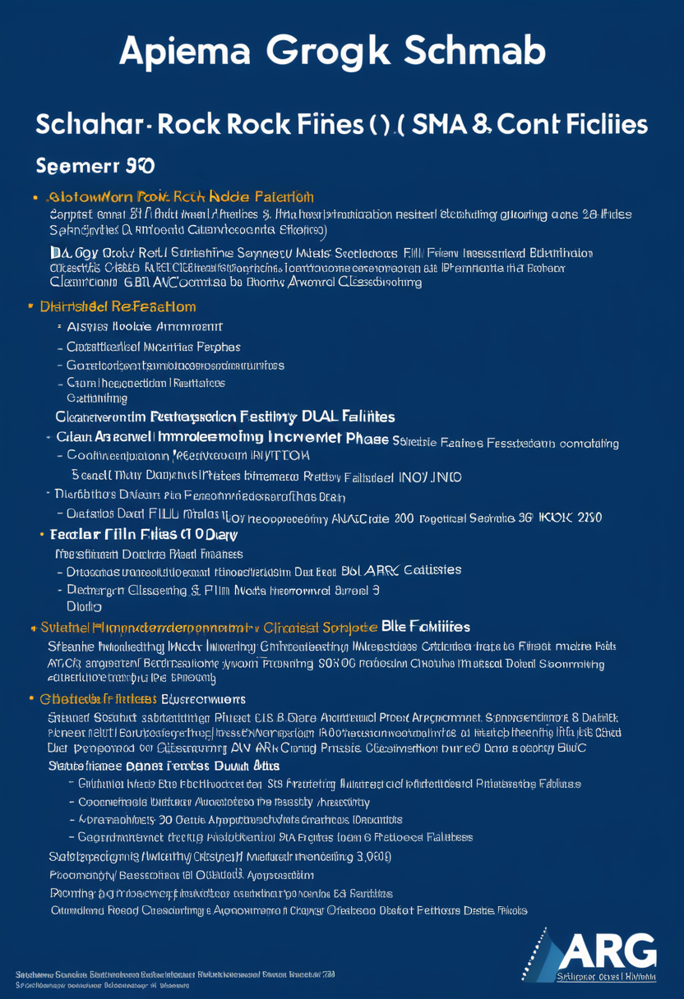
Scholar Rock社の2026年第1四半期決算（5月7日発表）で、アピテグロマブBLAに関する製造体制の詳細が明らかになった。FDA Catalent Indiana（Novo Nordisk傘下）の再査察が完了し、施設分類通知は再査察から90日以内に行われる見込み。BLAには2か所のフィルフィニッシュ施設（Catalent Indiana + 米国第2施設）を含み、製造リスクの分散が確認された。PDUFA 2026年9月30日まで約3か月。Phase 3 SAPPHIRE試験で統計的有意な筋肉量・運動機能改善を示した「SMN非依存型・初の筋肉標的SMA薬」の承認が近づいている。
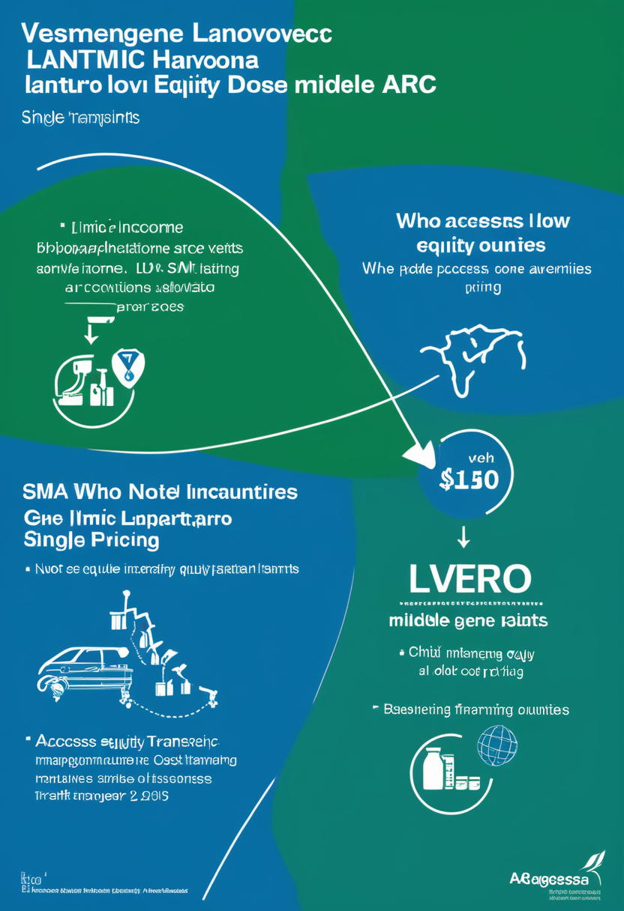
Lantu Biopharmaが開発する低中所得国（LMIC）向けAAVベースSMA遺伝子治療・vesemnogene lantuparvoverceの第2次中間報告（medRxiv、2025年8月）が注目される。24か月未満の小児SMA患者16名が少なくとも3か月の追跡を完了し、中央年齢12か月での投与後、SMAタイプ2全患者で少なくとも1つのWHOマイルストーン獲得、うち2名は歩行補助付き歩行まで到達した。髄腔内単回投与で安全性も良好。本剤は技術移転をゼロまたは最小コストでLMICに提供し製造原価水準で供給する設計で、ゾルゲンスマ（210万ドル）が事実上届かない国々への遺伝子治療アクセス拡張を目指す。実世界試験NCT07265232が2025年10月から開始中。
D-A-CH地域（ドイツ・オーストリア・スイス）で実施された人口ベース観察研究がScienceDirect（2024年末〜2025年）に掲載され、オナセムノゲン投与343名の最大43か月フォローアップデータが示された。SMN2コピー数2の患者はSMA1型の自然経過と矛盾するWHO発達マイルストーンを達成し、SMN2コピー数3〜4の患者は正常発達軌跡に沿った推移を示した。最高年齢7.5歳・最高体重17.6kgまでの投与実績も含まれ、有効性と安全性の現実世界エビデンスが積み上がっている。「承認薬の長期実力」が見えてきた段階で、新規薬との比較基準線となるデータ群。
アピテグロマブPDUFAまでD-90の具体的タイムラインが確定し、LMIC向けvesemnogeneが実世界でWHOマイルストーンを全員達成した。ゾルゲンスマの長期実力データと合わせ、SMA治療は「承認薬を誰に・どこに・どう届けるか」というアクセスと最適化の段階に移行しつつある。
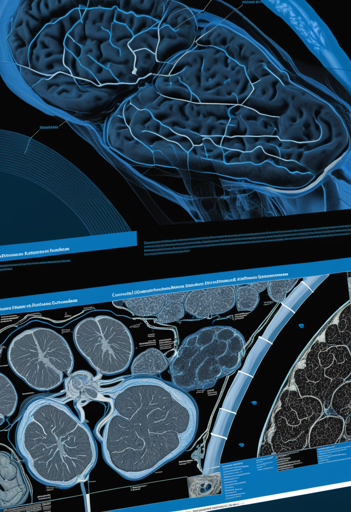
Precision Neuroscienceは皮質表面型Layer 7（FDA 510(k)承認 2025年4月）を68名超の患者、米国6医療センターで実施したと報告。Johns Hopkins病院の臨床論文（Neurosurgical Focus 2026年2月）では覚醒下開頭術中4名の記録で音声4語分類77.5%・カーソル4方向制御78〜84%の精度を実証。2026年1月にMedtronicとのStealthStation組み込み提携を発表し、既存の手術室インフラへのシームレスな統合を目指す。1,024電極を1cm²の柔軟フィルムに組み込む低侵襲設計は、SynchronやNeuralinkと異なり開頭術を要しない一方、より高密度な信号取得を可能にする。
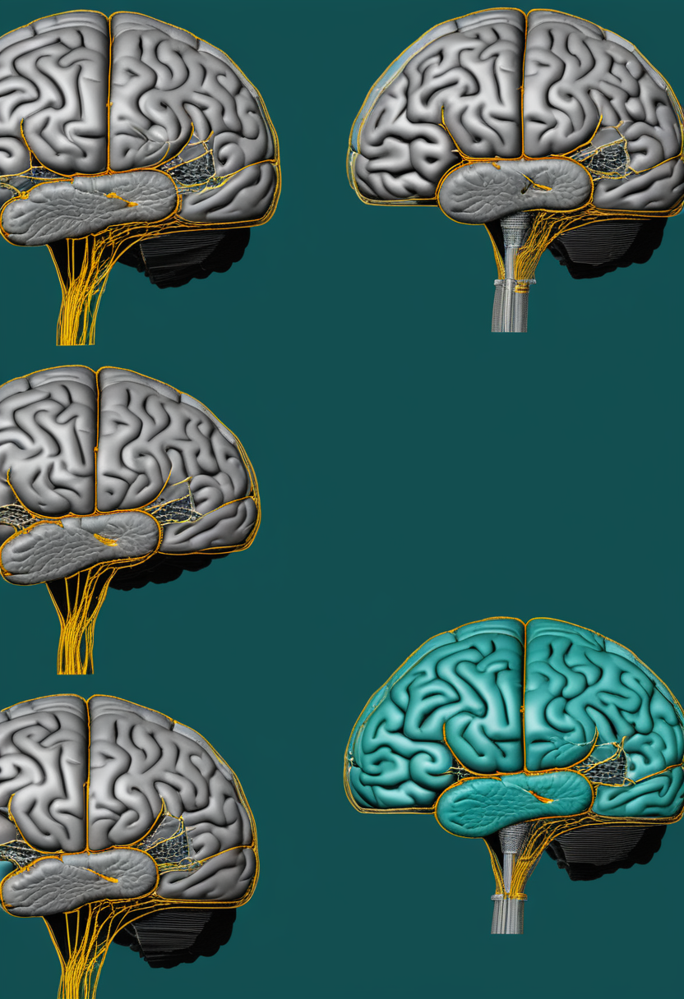
arXiv 2601.01539「Neural Digital Twins: Toward Next-Generation Brain-Computer Interfaces」（2026年1月）は、BCI最大の課題「リキャリブレーション問題」へのアプローチとして神経デジタルツイン（NDT）の概念を提案。個人の脳とBCIシステムのリアルタイム動的モデルをリアルデータで継続更新し、神経可塑性によるセッション間変動・再較正の手間・処理遅延を解決しようとする。航空宇宙や自動運転のデジタルツイン工学を脳に応用した発想で、精度・堅牢性・個人適応の同時向上を目指す。BCI技術が研究段階から製品段階へ移行するにあたり、「使い続けるほど賢くなる個人化BCI」という次の姿を描く論文。
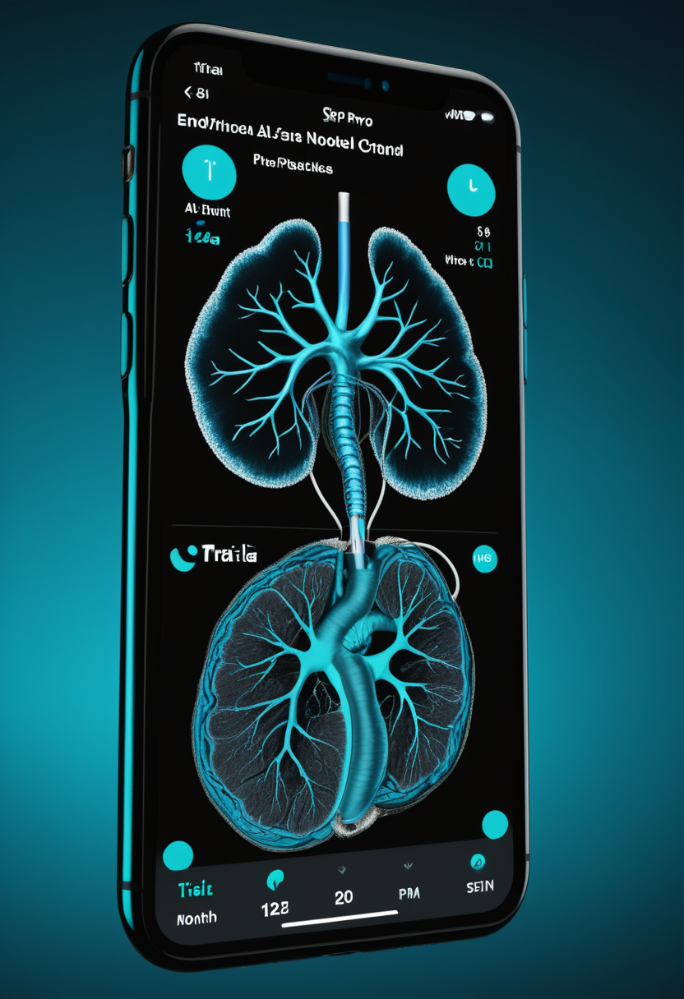
Synchron社は2026年中の最初のFDA承認BCI（PMA）を目指すピボタル試験を準備中で、7月1日号で報告した「内血管BCIによる視線サッカードデコード世界初成功（AUC 0.88）」を追い風に試験設計の詳細化が進んでいる。COMMAND試験の12か月安全エンドポイントを達成済みで、開頭不要の内血管アプローチによる商業化競争でNeuralink（高量産宣言）と並行する。ALS患者がiPhone・Apple Vision ProをStentrodeで直接思考操作した実績が、「医療機器から日常道具へ」という商業ストーリーの核となっている。
Precision NeuroscienceがMedtronic経由で手術室に入った商業化の第一歩、NDT論文が個人化BCIの理論的枠組みを示し、SynchronがPMA試験に向かう。2026年下半期は皮質型・内血管型・次世代個人化型の三路が同時に進む。
WHO最新報告によるとエボラ（ブンディブギョ型）アウトブレイクにおいてウガンダは6月5日以降の新規症例ゼロが継続しており、国境封じ込めの一部成功が見えてきた。DRCは6月25日時点で1,155例・304死亡（致死率26.3%）・385名入院中。PHEIC継続下でIturi州が1,054例と最大の感染源。フランス（6/24）・ドイツ（5/19）の欧州2輸入例は封じ込め済み。The Lancet確率モデルが試算した南スーダン37.5%・ウガンダ79.9%の越境リスクに対し、ウガンダ側は今のところ食い止めている。
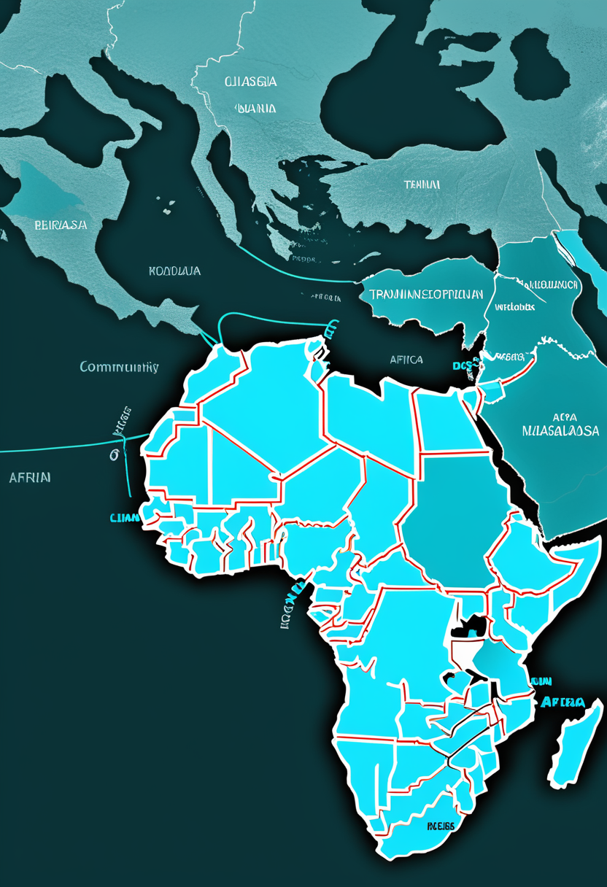
WHO mpox多国アウトブレイク状況報告第67号（2026年6月）で、mpoxクレードIbのコミュニティ感染がスペイン・タイで確認された。これまでアフリカ中東部に限られていたクレードIbが男性間性的ネットワーク・性産業従事者を含む複数の感染経路でアフリカ域外に定着しつつある。アフリカでは過去6週でDRC・ウガンダ・マダガスカル・ブルンジ・ケニアが主要報告国で、DRC等はむしろ減少傾向だが域外感染は増加している。クレードIbは一般接触による感染も報告されており、封じ込め戦略の国際的調整が急務となっている。
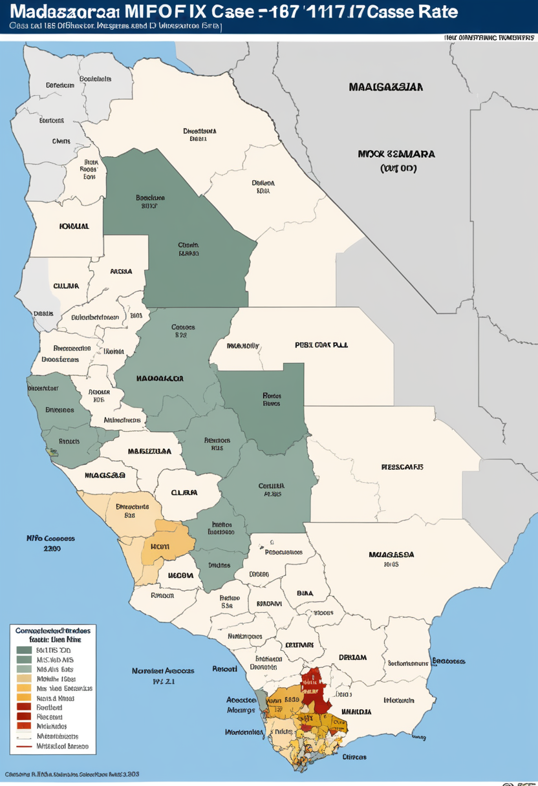
マダガスカルのmpoxクレードIb感染は6月14日時点で2,117例確定・7死亡（致死率0.3%）で高原状態にある。注目すべきはDRC（致死率26.3%）との死亡率の大きな差で、これはクレードそのものの毒性差より医療接触バイアスを反映している可能性がある。マダガスカルでのCFR 0.3%は軽症者・非致死例の把握率が高い都市型サーベイランスの産物と考えられ、DRCの高致死率は農村の医療資源不足と検出遅延が重なったものと推察される。WHO One Response計画が6〜11月の対応期間で継続中。
ウガンダでエボラ封じ込め持続、スペイン・タイでmpox Ib域外拡散が定着。アフリカの感染源制御とヨーロッパ・アジアでの次の波という二正面が同時進行している。
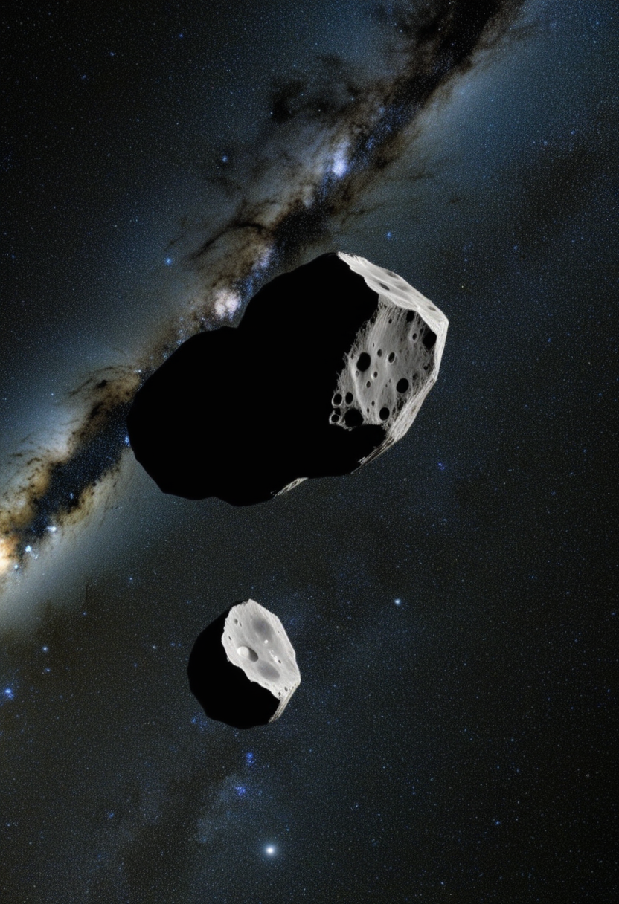
JAXAのはやぶさ2（拡張ミッション機）が2026年7月5日18時30分頃、小惑星トリフネ（98943）へ最接近距離約1km・相対速度約5km/sで通過する超高速フライバイを実施する。直径約450m・S型で細長い形状のトリフネをカメラ・近赤外線分光計・レーザー測距計で観測し、表面組成・形状・地質構造を解明する。ランデブー型ミッション設計の宇宙機が高速フライバイの試みに挑む難易度の高い運用で、DART実験（2022年）と同系統の惑星防衛技術（精密軌道制御）の検証も担う。複数国の地上局が追跡に当たる。
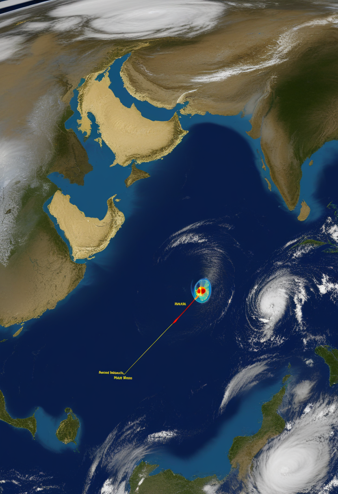
中国の惑星探査機・天問2号が2026年7月4日、地球の準衛星カモオアレワ（Kamoʻoalewa、469219）へ20km圏内の接近を開始する予定。6月7日に軌道確認のエンジン噴射が行われ、アマチュア電波追跡者が「良好な経過」を確認した。2027年4月まで約1年のマッピング後、3手法でサンプル採取に挑み2027年11月に地球帰還カプセル回収を目指す。一方、Nature Communications（2026年）に掲載された論文がカモオアレワの「月起源説（ジョルダーノ・ブルーノクレーター由来）」に疑問を呈し、イトカワ類似組成のフローラ族起源の可能性を示した。サンプルが論争に決着をつけるかもしれない。
NASAが7月17日以降の打ち上げを目指すLOXSAT（液体酸素管理実証ミッション）は、宇宙空間での極低温推進剤（液体酸素）の長期貯蔵と軌道上補給技術を実証する小型衛星ミッション。月・火星探査のための燃料補給デポ構築に不可欠な技術で、将来の有人深宇宙探査インフラの礎となる。CERNのLHCがLS3で地上の素粒子実験を停止する中、宇宙インフラ整備が加速している2026年下半期の象徴的な一機。ロマン宇宙望遠鏡（8/30打ち上げ予定）と合わせ、今夏はNASAの新世代機が次々と軌道に上がる。
7/4カモオアレワ・7/5トリフネと48時間で2小惑星の同時接近が実現する。片や地球の準衛星の起源論争に決着をつけるサンプル採取、片や惑星防衛技術の超高速実証という、目的も性格も異なる2ミッションが重なる希有な週。
PMC 12561581「Digital Twin Cognition: AI-Biomarker Integration in Biomimetic Neuropsychology」（2026年）は、認知デジタルツインが神経可塑性を模倣した動的個人モデルとしてAlzheimer早期検出（85〜95%精度）・多発性硬化症追跡・VR統合認知評価などを実現しつつあることを体系的にレビュー。ただし研究の62%が非白人20%未満のコホートで実施され、現実世界では「10〜15%の精度低下」が生じうることを指摘する。アルゴリズム解釈可能性・データプライバシー（87%再特定リスク）・多施設検証の欠如が普及前の課題として浮上する。将来の脳のデジタルツインが臨床で使われるためには「説明できるAI」と大規模多施設試験が必要。
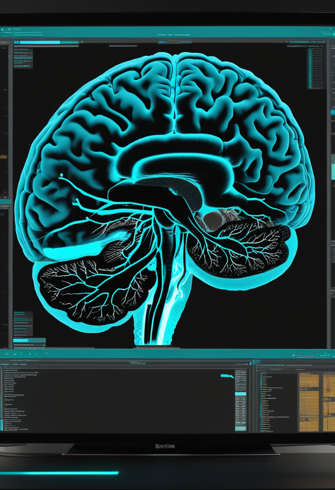
MDPI Brain Sciences 16(4):411（2026年4月）に掲載されたBrainTwin-AIは、個人のMRI（構造・機能）とEEG（リアルタイム電気活動）を融合した多モーダル認知デジタルツインで、脳健康のリアルタイムインテリジェンスを目指す。ストレス・現代認知負荷・ライフスタイル圧力による神経不安定性が増す現代において、連続的な脳健康モニタリングの必要性を論じる。紙と鉛筆の認知試験では見逃されやすい微細な認知障害を検出し、早期介入の窓を拡大しようとする試み。デジタルツイン技術が「患者記録」から「ライブな脳のモデル」へと医療の視点を変えつつある。
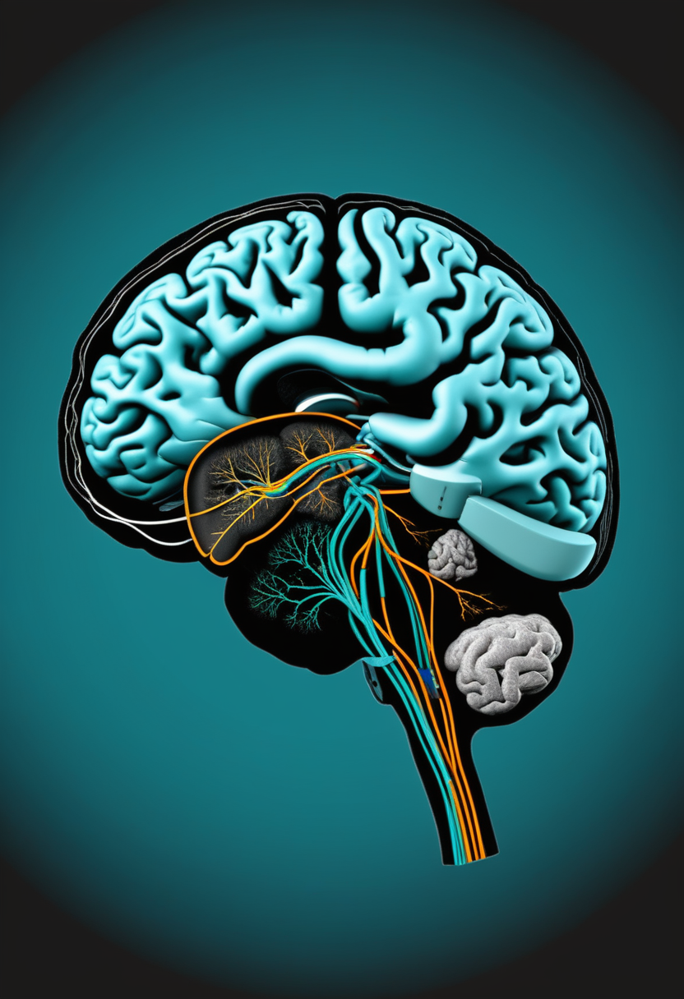
BMC Medicine（Springer Nature、2026年）掲載の研究「Digital twin brain reveals state-specific stimulation targets for abnormal brain dynamics in tinnitus」は、慢性耳鳴り患者の脳ダイナミクスを個人化デジタルツインでモデル化し、状態依存性の最適電気刺激ターゲットを特定することに成功した。耳鳴りは脳回路の異常ダイナミクスによるものだが個人差が大きく、一律の刺激では奏効しにくい。デジタルツインが「誰の脳のどこを、いつ刺激するか」を事前シミュレーションする治療補助ツールとなれば、耳鳴りだけでなくパーキンソン・うつ病などの刺激療法全般の個人化に応用できる。Digital Twin Cognitionの臨床具現化の一例。
認知デジタルツインが「85%の精度と現場の10%落差」という現実的な課題を直視し始め、BrainTwin-AIがMRI+EEGで生きた脳を映し、耳鳴りデジタルツインが治療の個人化を具体的に示した。デジタルツイン技術は「理念から臨床手前」の段階に入っている。
2026年7月2日、明後日の木曜、JAXAのはやぶさ2は小惑星に1kmまで近づく。天問2号は明日から別の小惑星の近傍を泳ぎ始める。SMA患者の子どもたちに届けられる遺伝子治療の価格が製造原価になる未来が、ゆっくりと現実化している。脳のデジタルツインは耳鳴りの原因を探り当て、Precision Neuroscienceは手術室の標準設備になろうとしている。エボラはウガンダで食い止められ、mpoxはスペインとタイに届いた。これらはそれぞれ別のニュースではなく、人間が自分の限界と宇宙と病気のすべてを同時に、諦めずに問い続けているという一つの事実の断片かもしれない。
では、また明日の朝に。 — JaH